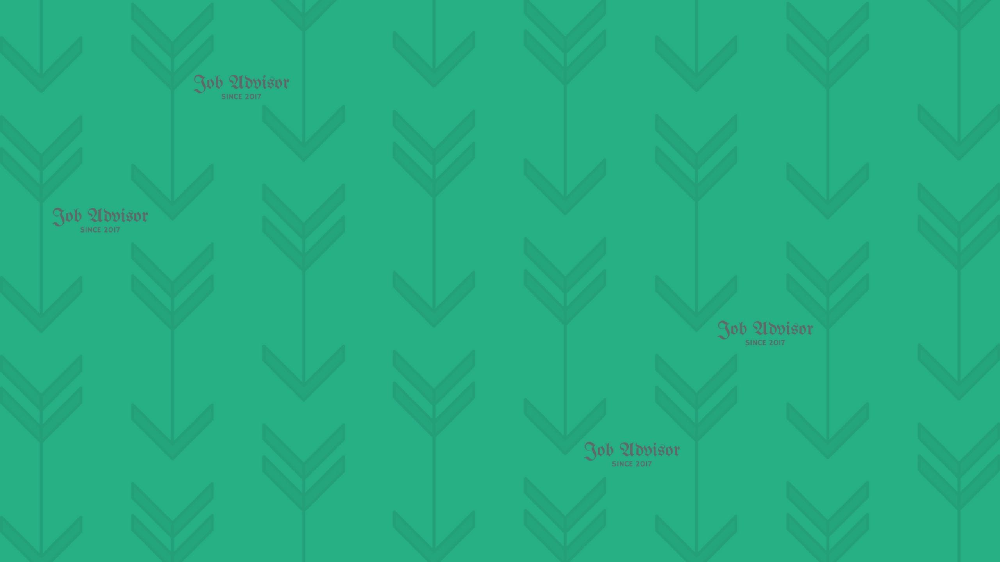

<link rel="import" href="./components/polymer/polymer.html"/>
<link rel="import" href="./profile-display.html"/>
<link rel="import" href="./components/app-route/app-route.html" />
<link rel="import" href="./components/app-route/app-location.html" />
<link rel="import" href="./components/iron-pages/iron-pages.html" />
<link rel="import" href="./user-login.html"/>
<link rel="import" href="./my-profile.html"/>
<link rel="import" href="./profile-edit.html"/>
<link rel="import" href="./sign-up.html"/>
<link rel="import" href="./create-freelancer.html"/>
<link rel="import" href="./user-create-freelancer.html"/>
<!--
This is the polymer component for the search field.
-->

<dom-module id="big-component">
  <template>
    <style>
    :root{
    --main-color:#494E6B;
    --second-color:#98878F;
    --third-color:#985E6D;
    --fourth-color:#192231;
    }
    body{
      background-color: var(--main-color);
    }
    /*.fields{
        display: flex;
        flex-direction: row;
        width: 100%;
    }
    .input-fields{
      display: flex;
      flex-direction: row;
      width: 100%;
      height: 100%;
    }*/
    /*.background-image{
        width: 100%;
        height: 40%;
    }*/
    .search-field-0 #logo.search-field{
      color:white;
    }
    search-field{
      width: 100%;
      position: fixed;
      z-index: 100;
    }
    form{
      width: 100%;
    }
    search-display{
      width: 100%;
    }
    iron-pages{
      width: 100%;
    }
    #divcont{
      width: 100%;
      background-color: white;
      height: 100%;
    }
    profile-display{
      width: 100%;
    }
    profile-edit{

    }
    </style>

    <app-location route="{{route}}"></app-location>
    <app-route
    route="{{route}}"
    pattern="/:view"
    data="{{routeData}}"
    tail="{{subroute}}"></app-route>

    <app-route
    route="{{subroute}}"
    pattern="/:freelancer_id"
    data="{{subRouteData}}"></app-route>

    <search-field search-data={{searchData}}  current-coordinates="{{currentCoordinates}}" just-searched={{justSearched}}></search-field>
    <iron-pages attr-for-selected="name" selected="[[page]]" fallback-selection="search">
      <form name="search">
          <div class = "input-fields">
              <div class = 'fields'>
                  <div id='divcont'>

                      <search-display  current-coordinates="{{currentCoordinates}}" search-data={{searchData}}></search-display>
                      <div>
                          <!--  -->
                      </div>
                  </div>
              </div>
          </div>
      </form>
      <profile-display freelancer-id="{{freelancerId}}" name="profile"></profile-display>
      <my-profile user-id="{{user_id}}" name="myprofile"></my-profile>
      <user-login name="login"></user-login>
      <create-freelancer name="create-freelancer"> </create-freelancer>
      <user-create-freelancer name="user-create-freelancer"> </user-create-freelancer>
      <create-freelancer freelancer-id="{{freelancerId}}" edit="true" name="edit"> </create-freelancer>
      <sign-up name="sign-up"></sign-up>
    </div>
    </iron-pages>

<!-- [[prop1]] -->
  </template>

  <script>
    Polymer({

      is: 'big-component',

      properties: {
        prop1: {
          type: String,
          value: '© Job Advisor',
        },
        behaviors: [ Polymer.IronResizableBehavior ],
        listeners: { "iron-resize": "onWidthChange" },
        searchData:{
          type:[],
          value:[]
        },
        page:{
          type:String,
          value:"profile"
        },
        freelancerId:{
          type:String,
          default:""
      },
      justSearched:{
          type:Boolean,
          notify:true,
          default:false
      },route:{

      },currentCoordinates:{
      }

    },
      observers:[
        "_routePageChanged(routeData.view)",
        "_subRouteChanged(subRouteData.freelancer_id)",
        "_justSearched(justSearched)"
      ],
        _routePageChanged(newPage){
          this.page= newPage
        },
        _subRouteChanged(id){
          this.freelancerId=id
      },
      _justSearched(){
          if(this.justSearched){
              this.set("route.path", "/search")
          }
          this.justSearched=false
      }


    });
  </script>
</dom-module>
